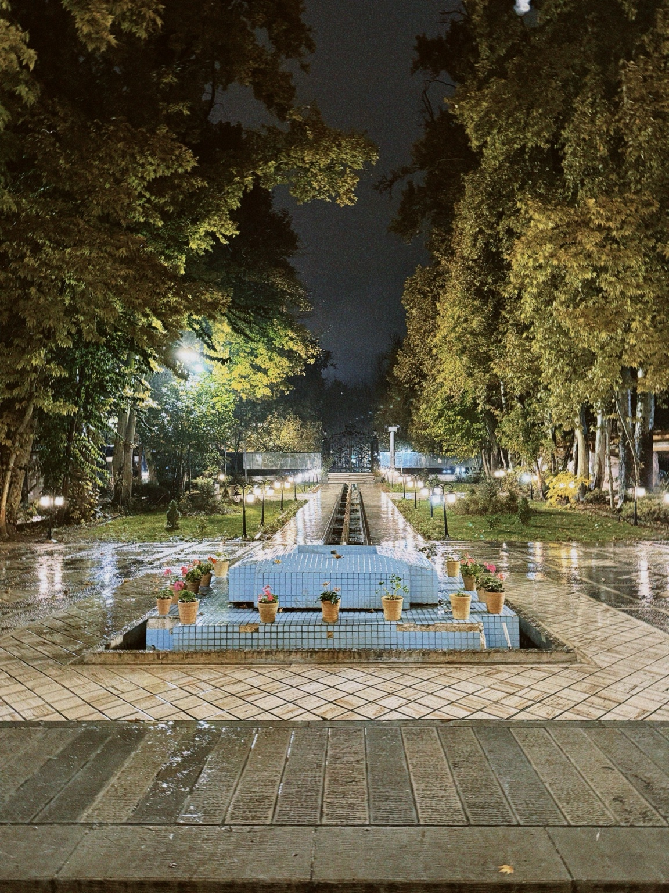

Tehran, 2024
A nighttime view of a tree-lined garden and tiled fountain in Tehran, Iran, after rain, illuminated by street and garden lights.

A nighttime view of a tree-lined garden and tiled fountain in Tehran, Iran, after rain, illuminated by street and garden lights.